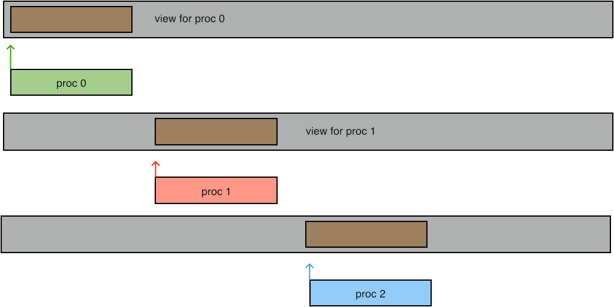

This chapter discusses the I/O support of MPI, which is intended to alleviate the problems inherent in parallel file access. Let us first explore the issues. This story partly depends on what sort of parallel computer are you running on.
Based on this, the following strategies are possible, even before we start talking about MPI I/O.
For these reasons, MPI has a number of routines that make it possible to read and write a single file from a large number of processes, giving each well-defined locations where to access the data. In fact, MPI-IO uses MPI derived datatype s for both the source data (that is, in memory) and target data (that is, on disk). Thus, in one call that is collective on a communicator each process can address data that is not contiguous in memory, and place it in locations that are not contiguous on disc.
There are dedicated libraries for file I/O, such as hdf5 , netcdf , or silo . However, these often add header inforation to a file that may not be understandable to post-processing applications. With MPI I/O you are in complete control of what goes to the file. (A useful tool for viewing your file is the unix utility od .)
Each node has a private /tmp file system (typically flash storage), to which you can write files. Considerations:
crumb trail: > mpi-io > File handling
MPI has its own file handle: MPI_File .
You open a file with MPI_File_open
Semantics:
MPI_FILE_OPEN(comm, filename, amode, info, fh)
IN comm: communicator (handle)
IN filename: name of file to open (string)
IN amode: file access mode (integer)
IN info: info object (handle)
OUT fh: new file handle (handle)
C:
int MPI_File_open
(MPI_Comm comm, char *filename, int amode,
MPI_Info info, MPI_File *fh)
Fortran:
MPI_FILE_OPEN(COMM, FILENAME, AMODE, INFO, FH, IERROR)
CHARACTER*(*) FILENAME
INTEGER COMM, AMODE, INFO, FH, IERROR
Python:
Open(type cls, Intracomm comm, filename,
int amode=MODE_RDONLY, Info info=INFO_NULL)
Note the slightly unusual syntax for opening a file:
mpifile = MPI.File.Open(comm,filename,mode)
Even though the file is opened on a communicator, it is a class method for the MPI.File class, rather than for the communicator object. The latter is passed in as an argument.
File access modes:
These modes can be added or bitwise-or'ed.
You can delete a file with MPI_File_delete .
Buffers can be flushed with MPI_File_sync , which is a collective call.
crumb trail: > mpi-io > File reading and writing
The basic file operations, in between the open and close calls, are the POSIX-like, non-collective, calls
MPI_File_seek - Updates individual file pointers (noncollective) C: #includeint MPI_File_seek(MPI_File fh, MPI_Offset offset,int whence) Fortran 2008: USE mpi_f08 MPI_File_seek(fh, offset, whence, ierror) TYPE(MPI_File), INTENT(IN) :: fh INTEGER(KIND=MPI_OFFSET_KIND), INTENT(IN) :: offset INTEGER, INTENT(IN) :: whence INTEGER, OPTIONAL, INTENT(OUT) :: ierror Fortran 90: USE MPI ! or the older form: INCLUDE ’mpif.h’ MPI_FILE_SEEK(FH, OFFSET, WHENCE, IERROR) INTEGER FH, WHENCE, IERROR INTEGER(KIND=MPI_OFFSET_KIND) OFFSET Input parameters: fh : File handle (handle). offset : File offset (integer). whence : Update mode (integer). Output parameters: IERROR : Fortran only: Error status (integer)
Synopsis: write at current file pointer MPI_File_write: non-collective MPI_File_write_all : collective C Syntax #includeint MPI_File_write int MPI_File_write_all(MPI_File fh, const void *buf, int count, MPI_Datatype datatype, MPI_Status *status) Input parameters: buf : Initial address of buffer (choice). count : Number of elements in buffer (integer). datatype : Data type of each buffer element (handle). Output parameters: status : Status object (status). IERROR : Fortran only: Error status (integer). USE mpi_f08 MPI_File_write MPI_File_write_all(fh, buf, count, datatype, status, ierror) TYPE(MPI_File), INTENT(IN) :: fh TYPE(*), DIMENSION(..), INTENT(IN) :: buf INTEGER, INTENT(IN) :: count TYPE(MPI_Datatype), INTENT(IN) :: datatype TYPE(MPI_Status) :: status INTEGER, OPTIONAL, INTENT(OUT) :: ierror USE MPI ! or the older form: INCLUDE ’mpif.h’ MPI_FILE_WRITE(FH, BUF, COUNT, DATATYPE, STATUS, IERROR) BUF(*) INTEGER FH, COUNT, DATATYPE, STATUS(MPI_STATUS_SIZE), IERROR
Synopsis: write at current file pointer MPI_File_write: non-collective MPI_File_write_all : collective C Syntax #includeint MPI_File_write int MPI_File_write_all(MPI_File fh, const void *buf, int count, MPI_Datatype datatype, MPI_Status *status) Input parameters: buf : Initial address of buffer (choice). count : Number of elements in buffer (integer). datatype : Data type of each buffer element (handle). Output parameters: status : Status object (status). IERROR : Fortran only: Error status (integer). USE mpi_f08 MPI_File_write MPI_File_write_all(fh, buf, count, datatype, status, ierror) TYPE(MPI_File), INTENT(IN) :: fh TYPE(*), DIMENSION(..), INTENT(IN) :: buf INTEGER, INTENT(IN) :: count TYPE(MPI_Datatype), INTENT(IN) :: datatype TYPE(MPI_Status) :: status INTEGER, OPTIONAL, INTENT(OUT) :: ierror USE MPI ! or the older form: INCLUDE ’mpif.h’ MPI_FILE_WRITE(FH, BUF, COUNT, DATATYPE, STATUS, IERROR) BUF(*) INTEGER FH, COUNT, DATATYPE, STATUS(MPI_STATUS_SIZE), IERROR
Synopsis: Reads a file starting at the location specified by the individual file pointer (blocking, noncollective). C Syntax #includeint MPI_File_read(MPI_File fh, void *buf, int count, MPI_Datatype datatype, MPI_Status *status) USE mpi_f08 MPI_File_read(fh, buf, count, datatype, status, ierror) TYPE(MPI_File), INTENT(IN) :: fh TYPE(*), DIMENSION(..) :: buf INTEGER, INTENT(IN) :: count TYPE(MPI_Datatype), INTENT(IN) :: datatype TYPE(MPI_Status) :: status INTEGER, OPTIONAL, INTENT(OUT) :: ierror USE MPI ! or the older form: INCLUDE ’mpif.h’ MPI_FILE_READ(FH, BUF, COUNT, DATATYPE, STATUS, IERROR) BUF(*) INTEGER FH, COUNT, DATATYPE, STATUS(MPI_STATUS_SIZE),IERROR Input parameters: fh : File handle (handle). count : Number of elements in buffer (integer). datatype : Data type of each buffer element (handle). Output parameters: buf : Initial address of buffer (integer). status : Status object (status). IERROR : Fortran only: Error status (integer).
Synopsis: Reads a file starting at the location specified by the individual file pointer (blocking, noncollective). C Syntax #includeint MPI_File_read(MPI_File fh, void *buf, int count, MPI_Datatype datatype, MPI_Status *status) USE mpi_f08 MPI_File_read(fh, buf, count, datatype, status, ierror) TYPE(MPI_File), INTENT(IN) :: fh TYPE(*), DIMENSION(..) :: buf INTEGER, INTENT(IN) :: count TYPE(MPI_Datatype), INTENT(IN) :: datatype TYPE(MPI_Status) :: status INTEGER, OPTIONAL, INTENT(OUT) :: ierror USE MPI ! or the older form: INCLUDE ’mpif.h’ MPI_FILE_READ(FH, BUF, COUNT, DATATYPE, STATUS, IERROR) BUF(*) INTEGER FH, COUNT, DATATYPE, STATUS(MPI_STATUS_SIZE),IERROR Input parameters: fh : File handle (handle). count : Number of elements in buffer (integer). datatype : Data type of each buffer element (handle). Output parameters: buf : Initial address of buffer (integer). status : Status object (status). IERROR : Fortran only: Error status (integer).
For thread safety it is good to combine seek and read/write operations:
Writing to and reading from a parallel file is rather similar to sending a receiving:
crumb trail: > mpi-io > File reading and writing > Non-blocking read/write
Just like there are blocking and non-blocking sends, there are also non-blocking writes and reads: MPI_File_iwrite
Synopsis
nonblocking write using individual file pointer
MPI_File_iwrite: non-collective
C syntax:
#ifdef HAVE_MPI_GREQUEST
#include "mpiu_greq.h"
#endif
int MPI_File_iwrite(MPI_File fh,
ROMIO_CONST void *buf, int count, MPI_Datatype datatype,
MPI_Request * request)
Input parameters:
fh : file handle
buf : Initial address of buffer (choice).
count : Number of elements in buffer (integer).
datatype : Data type of each buffer element (handle).
Output parameters:
request : request object (handle)
status : Status object (status).
IERROR : Fortran only: Error status (integer).
Also MPI_File_iwrite_at_all , MPI_File_iread_at_all .
These routines output an MPI_Request object, which can then be tested with MPI_Wait or MPI_Test .
Non-blocking collective I/O functions much like other non-blocking collectives (section {sec:mpi3collect}): the request is satisfied if all processes finish the collective.
There are also split collective routines that function like non-blocking collective I/O, but with the request/wait mechanism: MPI_File_write_all_begin / MPI_File_write_all_end (and similarly MPI_File_read_all_begin / MPI_File_read_all_end ) where the second routine blocks until the collective write/read has been concluded.
Also MPI_File_iread_shared , MPI_File_iwrite_shared .
crumb trail: > mpi-io > File reading and writing > Individual file pointers, contiguous writes
After the collective open call, each rank holds an individual file pointer each rank can individually position the pointer somewhere in the shared file. Let's explore this modality.
The simplest way of writing a data to file is much like a send call: a buffer is specified with the usual count/datatype specification, and a target location in the file is given. The routine MPI_File_write_at
MPI_File_write_at(fh,offset,buf,count,datatype)
Semantics:
Input Parameters
fh : File handle (handle).
offset : File offset (integer).
buf : Initial address of buffer (choice).
count : Number of elements in buffer (integer).
datatype : Data type of each buffer element (handle).
Output Parameters:
status : Status object (status).
C:
int MPI_File_write_at
(MPI_File fh, MPI_Offset offset, const void *buf,
int count, MPI_Datatype datatype, MPI_Status *status)
Fortran:
MPI_FILE_WRITE_AT
(FH, OFFSET, BUF, COUNT, DATATYPE, STATUS, IERROR)
BUF(*)
INTEGER :: FH, COUNT, DATATYPE, STATUS(MPI_STATUS_SIZE), IERROR
INTEGER(KIND=MPI_OFFSET_KIND) :: OFFSET
Python:
MPI.File.Write_at(self, Offset offset, buf, Status status=None)
FIGURE 10.1: Writing at an offset
Create a buffer of length
nwords=3
on each process, and write
these buffers as a sequence to one file with
MPI_File_write_at
.
(See source blockwrite)
Instead of giving the position in the file explicitly, you can also use a MPI_File_seek call to position the file pointer, and write with MPI_File_write at the pointer location. The write call itself also advances the file pointer so separate calls for writing contiguous elements need no seek calls with MPI_SEEK_CUR .
Rewrite the code of exercise 10.1 to use a loop where each iteration writes only one item to file. Note that no explicit advance of the file pointer is needed.
Construct a file with the consecutive integers $0,…,WP$ where $W$ some integer, and $P$ the number of processes. Each process $p$ writes the numbers $p,p+W,p+2W,…$. Use a loop where each iteration
crumb trail: > mpi-io > File reading and writing > File views
The previous mode of writing is enough for writing simple contiguous blocks in the file. However, you can also access non-contiguous areas in the file. For this you use MPI_File_set_view
Semantics:
MPI_FILE_SET_VIEW(fh, disp, etype, filetype, datarep, info)
INOUT fh: file handle (handle)
IN disp: displacement (integer)
IN etype: elementary datatype (handle)
IN filetype: filetype (handle)
IN datarep: data representation (string)
IN info: info object (handle)
C:
int MPI_File_set_view
(MPI_File fh,
MPI_Offset disp, MPI_Datatype etype, MPI_Datatype filetype,
char *datarep, MPI_Info info)
Fortran:
MPI_FILE_SET_VIEW(FH, DISP, ETYPE, FILETYPE, DATAREP, INFO, IERROR)
INTEGER FH, ETYPE, FILETYPE, INFO, IERROR
CHARACTER*(*) DATAREP
INTEGER(KIND=MPI_OFFSET_KIND) DISP
Python:
mpifile = MPI.File.Open( .... )
mpifile.Set_view
(self,
Offset disp=0, Datatype etype=None, Datatype filetype=None,
datarep=None, Info info=INFO_NULL)
FIGURE 10.2: Writing at a view

(See source viewwrite)
Write a file in the same way as in exercise
10.1
,
but now use
MPI_File_write
and use
MPI_File_set_view
to set
a view that determines where the data is written.
You can get very creative effects by setting the view to a derived datatype.
FIGURE 10.3: Writing at a derived type
In Fortran you have to assure that the displacement parameter is of `kind' MPI_OFFSET_KIND . In particular, you can not specify a literal zero `0' as the displacement; use 0_MPI_OFFSET_KIND instead.
More: MPI_File_set_size MPI_File_get_size MPI_File_preallocate MPI_File_get_view
crumb trail: > mpi-io > File reading and writing > Shared file pointers
It is possible to have a file pointer that is shared (and therefore identical) between all processes of the communicator that was used to open the file. This file pointer is set with MPI_File_seek_shared . For reading and writing there are then two sets of routines:
Shared file pointers require that the same view is used on all processes. Also, these operations are less efficient because of the need to maintain the shared pointer.
crumb trail: > mpi-io > Consistency
It is possible for one process to read data previously writte by another process. For this it is of course necessary to impose a temporal order, for instance by using MPI_Barrier , or using a zero-byte send from the writing to the reading process.
However, the file also needs to be declared atomic : MPI_File_set_atomicity .
crumb trail: > mpi-io > Constants
MPI_SEEK_SET used to be called SEEK_SET which gave conflicts with the C++ library. This had to be circumvented with
make CPPFLAGS="-DMPICH_IGNORE_CXX_SEEK -DMPICH_SKIP_MPICXX"
and such.
\newpage
crumb trail: > mpi-io > Review questions
T/F? After your SLURM job ends, you can copy from the login node the files you've written to \tmp .
T/F? File views ( MPI_File_set_view ) are intended to
The sequence MPI_File_seek_shared , MPI_File_read_shared can be replaced by MPI_File_seek , MPI_File_read if you make what changes?